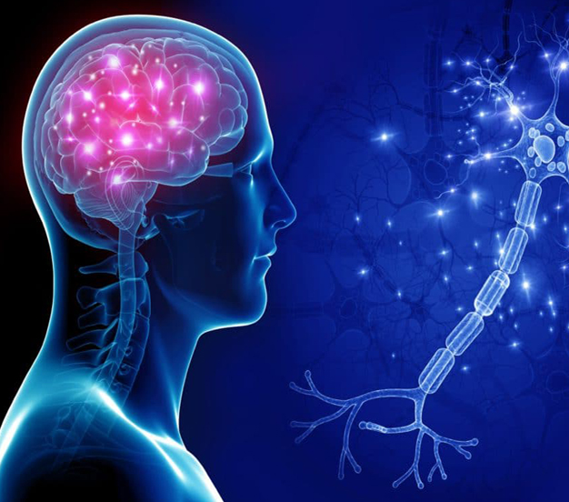

Angel Institute of Neurosciences is regarded as one of the best neurology and neurosurgery hospital in India with a legacy of innovation and excellence. Ably assisted by the latest Neuro-Radiology services, Neuro-Intensive Care facilities and Medical and Radiation Oncology services, our Neurologists and Neurosurgeons achieve outcomes in neurological disease & treatments matching those of the leading institutions across the globe. The department of neurosurgery at Angel Hospitals in India is well equipped to treat all the neurological diseases including stroke, headache, epilepsy, coma, neuropathies, multiple sclerosis, myopathies, Parkinson’s disease, Myasthenia Gravis and many more, establishing it as one of the best hospital for neurosurgery treatment in India. Neurosurgery a branch of surgery involved with the brain injury, spine and nerves, is a key specialty at Angle hospitals. Our neurosurgery doctors treat neurological diseases such as brain injury or diseases, head injury, spinal injury, brain tumors, spinal tumors, brain hemorrhage, hydrocephalus, nerve injuries, tumors, disc prolapse or herniation, spinal dislocation, unstable spine, congenital malformations like atlanto-axial dislocation, spinal dysraphism etc. Treatment of seizures or epilepsy as well as modern treatments for movement disorders like Parkinson’s disease are further specializations. More than 1000 major neurosurgeries are being carried out every year.
The Neurologists, Neurosurgeons, critical care specialists, nurses and researchers at the Angel Institute of Neurosciences collaborate seamlessly like a single entity. To the patient it means better diagnosis and better treatment. We are renowned for providing specialised care when it comes to stroke, head & spinal injuries, brain tumors, seizure disorders, movement disorders and headaches.